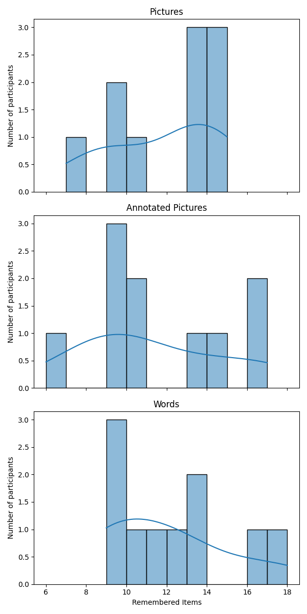
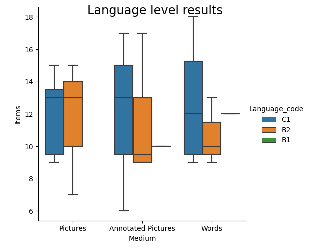

Results
Detailed elucidation of the different dimensions of the obtained results
In the final experimental study 30 participants took part, ten for each independent variable. All participants were currently enrolled at a university. With 17 female and 13 male participants the results should be fairly unbiased in regards to gender. All participants understood the instructions, consented to taking part in the experiment and voluntarily gave us their results of the experiment to evaluate.
Overall participants correctly remembered between 6 and 18 items with a total average of 11.73. Below a comprehensive record of the results.
| Medium | count | mean | std | min | 25% | 50% | 75% | max |
|---|---|---|---|---|---|---|---|---|
| Annotated Pictures | 10.0 | 11.4 | 3.7 | 6.0 | 9.0 | 10.0 | 13.7 | 17.0 |
| Pictures | 10.0 | 11.8 | 2.8 | 7.0 | 9.2 | 13.0 | 13.7 | 15.0 |
| Words | 10.0 | 12.0 | 3.1 | 9.0 | 9.25 | 11.5 | 13.0 | 18.0 |
| Total | 30.0 | 11.7 | 3.1 | 6.0 | 9.0 | 11.5 | 13.7 | 18.0 |
A visualisation of the recorded data is displayed below, with respect to the different groups.
Participants presented with annotated pictures overall remembered the least amount of items, with an average of 11.4 and a median of 10. Depending on which statistic measure is taken into account, pictures performed better than written words with a median of 13 compared to a median of 11.5, while the average number of correctly remembered items of words is 12 and the average of pictures is 11.8. According to the relatively high variance in comparison to the average, a reliable result would require a lot more participants, especially since our subjects were chosen and assigned to the independent variable values randomly and not by matching [1].
Significance Testing
Extended analysis, added by Sebastian Veuskens
It is crucial to investigate the significance of these recorded differences between groups. In addition to the submitted paper, in the following two statistical tests were performed on the data. Due to our study design, we can assume both inter- and intra-group independence.
Wilcoxon Mann-Whitney
A suitable non-parametric test for the difference of the underlying distributions between two different groups is the Wilcoxon Mann-Whitney test. Since only 2 groups can be compared at the same time, the test is applied for all three possible pairs of groups.
Assumptions
- All groups have the same distribution shape, except for the median
Null-Hypothesis
- Both groups have the same median (and thus also the same distribution)
Drawbacks
- It is not clear whether in our case a similar distribution shape can be assumed for all groups
- Some information might be lost due to the loose requirement of only ordinal (and not interval) scale of the recorded data
Alternative: Non-parametric bootstrap
With this testing procedure, we can test whether the expectation value of the underlying distributions differ. A centering computation is applied on the data in order to obtain the Null-Hypothesis distribution.
Characteristics
- Suitable especially also for small sample sizes
- Test only for discrepancy between expectation values of two groups, no similar shape of distributions is assumed
Null-Hypothesis
- Both groups have the same mean
Test outcomes
P-values
| Pair | Wilcoxon Mann-Whitney | Non-parametric bootstrap |
|---|---|---|
| Annotated pictures - words: | 0.701 | 0.694 |
| Annotated pictures - pictures: | 0.788 | 0.783 |
| Pictures - words: | 0.939 | 0.880 |
No significant differences between the mean or median of the different groups can be derived from the data. The p-value strongly rejects a possibly significant difference between all pairs of the three groups and accepts the Null-Hpyothesis in all cases for both tests.
The English level of participants seemed to have a big influence on the result. On average, participants with a higher level of English also remembered a higher number of items correctly, regardless of how the items were presented. 53% of participants had a English level of C1 and remembered 12.19 items correctly, while the 40% with an English level of B2 correctly remembered 11.25 items. The remaining 7% of participants with a B1 English level recalled 11 items correctly on average. The Boxplot below illustrates the difference, showing that people who had a higher English level remembered higher amounts of items more frequently than lower levels.
When asked, 70% of all participants confirmed they used the phonological loop to remember the items, and 76,6% used the visuospatial sketchpad at least partially. Yet when looking at the different variables, only half of the participants presented with words indicated that they used the phonological loop, while 70% of participants presented with annotated pictures and 90% of participants presented only with pictures said they did repeat the names of the items in their mind to memorize them. 60% of participants presented with written words said they imagined the items visually in their mind. For participants who were presented with either just pictures or annotated pictures it was 90%.
In the open question we asked participants to explain how they tried to remember the items. Six participants noted that they were trying to come up with a story that included all the items. These participants remembered a much higher number of items on average, it being 14.67 items, while all other participants had an average of 11 items.
13 participants categorized the items or remembered them via associating them with each other or personal feelings about them. Three participants repeated the items in their mind in sequence, though some noted that it quickly became too many items to do this. A few single notes included remembering the first letters of the items, concentrating really hard with their eyes closed or writing the last items down first. One participant who was presented with annotated pictures said they remembered more image details than the text. Six participants specifically mentioned that they remembered the items as “images in [their] head[s]”, though half of these participants were presented with written words and not with pictures. Five participants explicitly noted that they repeated the words in their mind.
References
| Number | Source |
|---|---|
| [1] | Kerlinger and Lee (2000) Foundations of behavioral research, Fourth Edition p.511, Wadsworth |
Get In Touch
You can reach me via email or LinkedIn message. I am excited to get in touch with you and I am always open for interesting projects or innovate ideas!